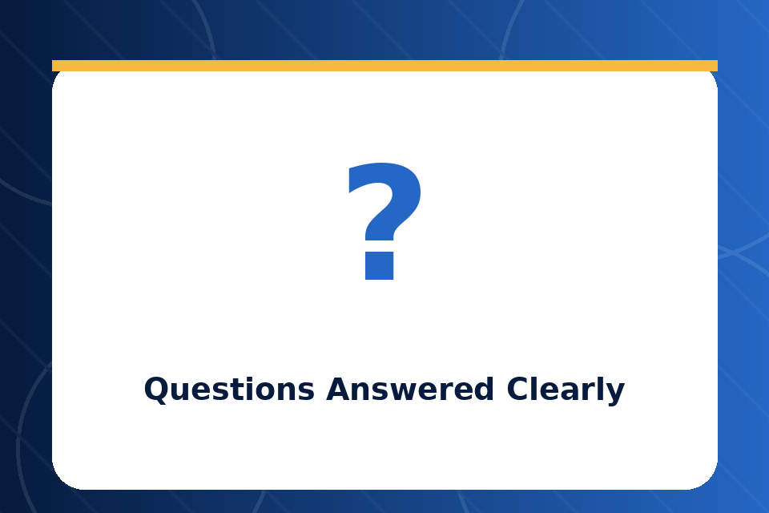
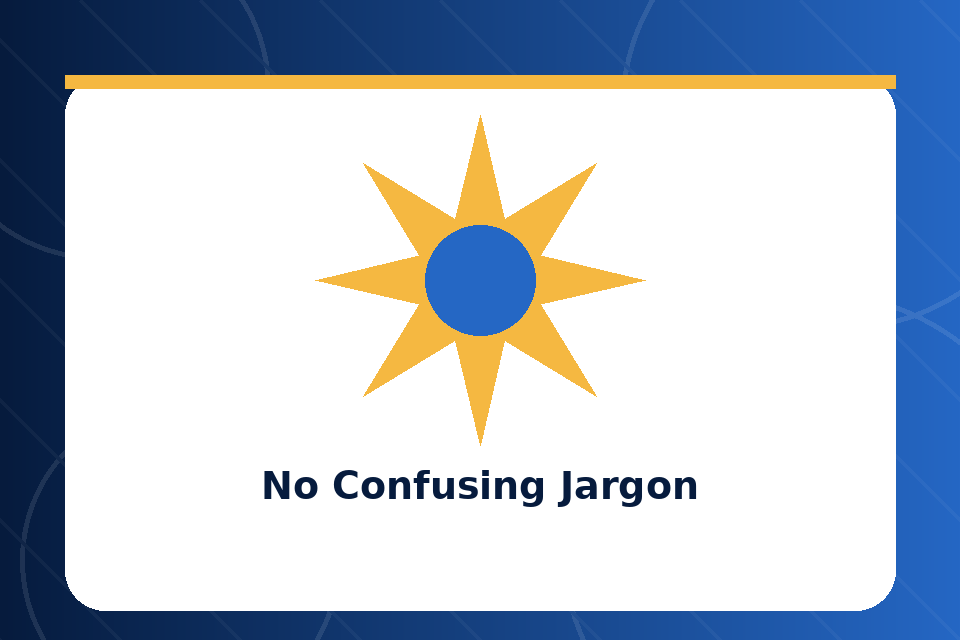
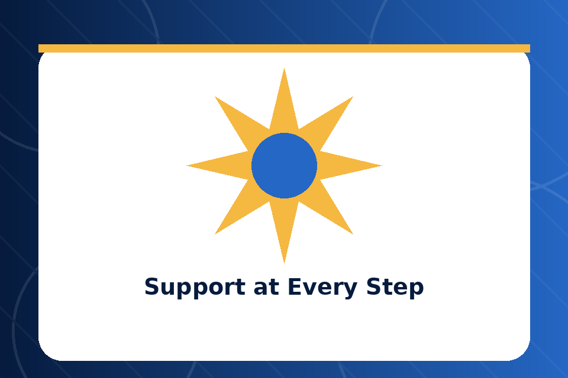

Question
Questions Answered Clearly
Explore straightforward answers about strategy, timelines, deliverables, pricing, communication, and what book marketing can realistically achieve.
Here are answers to the questions I hear most often from authors. If you do not find what you are looking for, feel free to reach out directly.
Explore straightforward answers about strategy, timelines, deliverables, pricing, communication, and what book marketing can realistically achieve.

Explore straightforward answers about strategy, timelines, deliverables, pricing, communication, and what book marketing can realistically achieve.

Explore straightforward answers about strategy, timelines, deliverables, pricing, communication, and what book marketing can realistically achieve.

Explore straightforward answers about strategy, timelines, deliverables, pricing, communication, and what book marketing can realistically achieve.
Absolutely. In fact, many of the authors I work with come to me with zero book marketing experience. I will walk you through every step of the process and make sure you understand what we are doing and why. You do not need to know anything about book marketing to work with me. That is my job.
Yes. A book does not stop needing book marketing after launch day. Many of my most successful campaigns have been for books that were published months or even years ago. It is never too late to start a proper book marketing strategy.
Both. Whether you published through Amazon KDP, IngramSpark, a traditional publishing house, or a hybrid publisher, I can create a book marketing strategy that works for your situation.
No honest book marketer can guarantee a specific number of sales because there are too many variables involved. What I can guarantee is that I will create and execute a thoughtful, data-driven book marketing strategy designed to improve your visibility and reach the right readers. The results I have achieved for 57 authors and 300+ books speak to the effectiveness of my approach.
Book marketing is a process, not an event. Some authors see improvements within the first few weeks, especially with Amazon optimization and targeted promotions. Others see more gradual growth over several months as their author brand and audience develop. I will set realistic expectations during our initial consultation so you know what to expect.
I use every platform that makes sense for your book and your audience. This includes Amazon, Instagram, TikTok, Facebook, Twitter/X, YouTube, Pinterest, LinkedIn, Threads, Goodreads, BookBub, email marketing platforms, book blogs, reader communities, and paid advertising networks. The specific mix depends on your genre and goals.
Yes. I understand that budgets vary, and I want every author to have access to professional book marketing. Reach out and we can discuss a payment arrangement that works for you.
When you contact me for a consultation, I will rewrite your Amazon book description for free. This is my way of showing you the quality of my work and giving you an immediate improvement to your book marketing before you even commit to a package.
The first step is simple. Fill out the contact form on this website or send me an email. Tell me about your book, your goals, and where you are in your author journey. I will review your information and schedule a free consultation so we can discuss your book marketing options.
All genres. Fiction, non-fiction, romance, thriller, fantasy, science fiction, mystery, self-help, business, memoir, poetry, children's books, young adult, Christian, academic, and everything in between. Every genre has its own audience and its own book marketing opportunities, and I have experience marketing books across all of them.
Yes. While A.Y.M Book Marketing is based in Texas, I work with authors from all over the world. Book marketing is primarily digital, so location is not a barrier. As long as we can communicate effectively, I can help you market your book regardless of where you are based.
Yes. While my packages are designed for comprehensive, long-term book marketing, I understand that some authors only need help in one specific area. Reach out and tell me what you need, and I will give you an honest recommendation on the best way to move forward.
I am always happy to talk. Send me a message and I will respond personally within 24 hours.
Contact A.Y.M Book Marketing